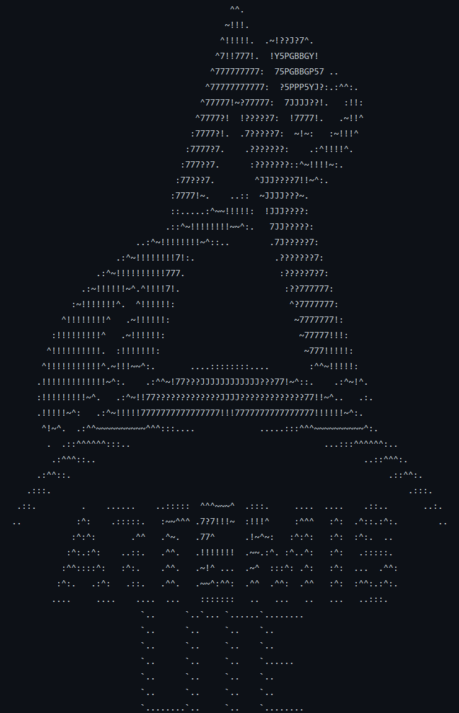

Artemis Lite

Artemis Lite is a 'board' game developed using Java as part of the Software Engineering Moudle in MSc Software Development. The game theme is the NASA Artemis missions and it was created within a team environment to develop students' abilities to work within a software engineering team. The process of requirements analysis, sysytem design, software implementation, and system testing that delivered reliable and appropriate functionality were the main focus of this project. The game is played within the console and is essentially a twist on monopoly.
Feel free to contact me at:
curtis.williamson31@gmail.com